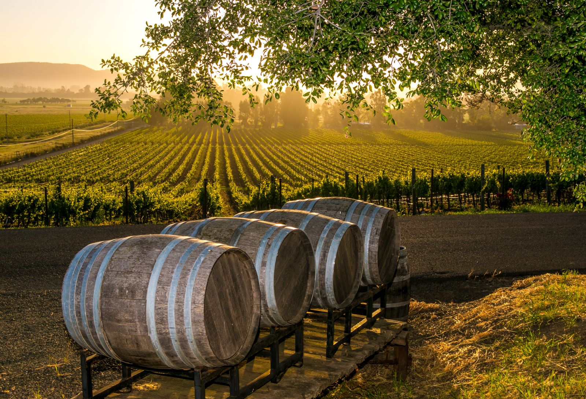

Revolutionizing wine
Today, wines are bought solely on the basis of individual's discretion. Using out state of the art predictive models, we can guide the perfect purchase.
Deep wine learning
Unlike many others, we take analysis beyond the descriptive statistics and the linear regressions. We will proviede you with the full picture.

Debunking myths and estblishing facts
Through the world there are many wine connoseurs, that clain to "known all there is to know" abouts wines. We do not make such a claim, but merely rely on the collective wisedom of your average Vivino wine user.